Transforming data capture across the business
A digital transformation initiative to improve how lead information was captured across Johnson Matthey. The project spanned five digital products, addressing fragmented workflows and complex data requirements to support more efficient information capture.
A fragmented process. A complex data landscape.
Lead information was captured across multiple tools and stages, with different project types requiring different data. This created a disjointed process that made consistency and efficient information management difficult to maintain.
The challenge at a glance
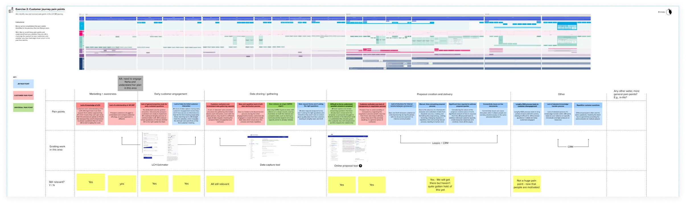
The business opportunity
The wider initiative projected substantial financial benefits from improved operational efficiency and customer lifetime value.
These figures represent projected benefits, not confirmed realised outcomes.
Making sense of 200 data points
The first step was to understand the end-to-end process and establish a structure that could accommodate the requirements of different project types. Journey mapping, stakeholder workshops and data analysis informed the information architecture, navigation and stages of data capture.
From process to structure
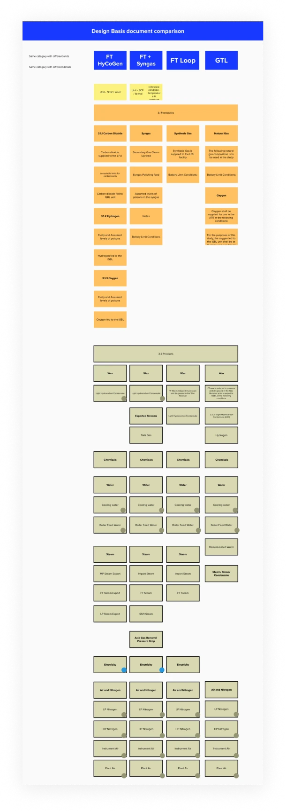
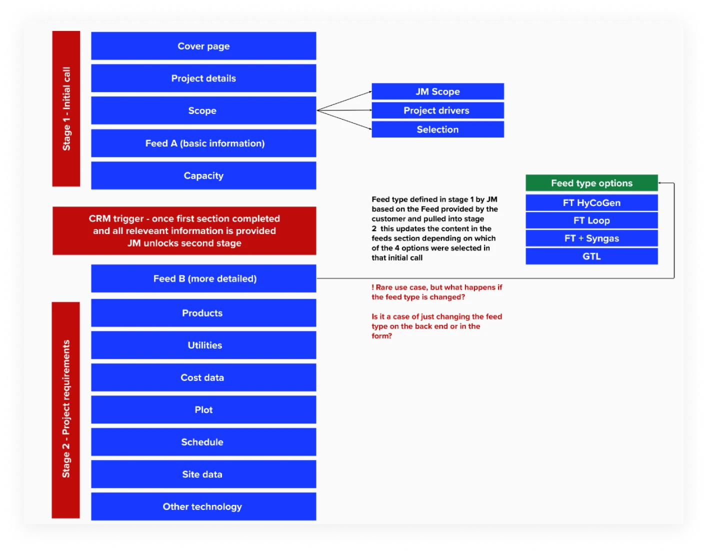
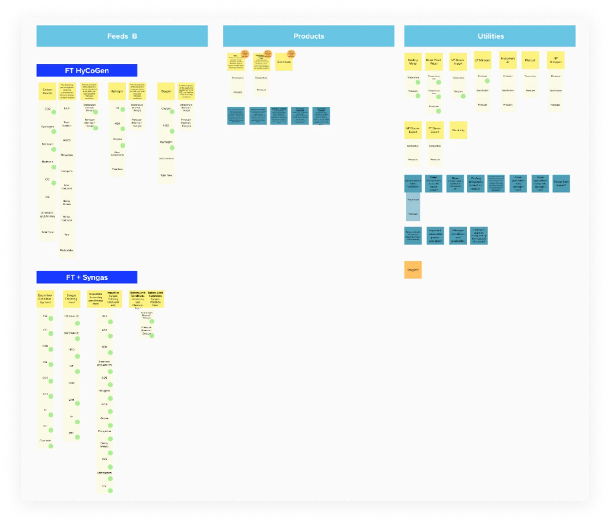
From structure to interface
Collaborative ideation and Figma prototyping explored how these requirements could translate into a consistent, usable experience.
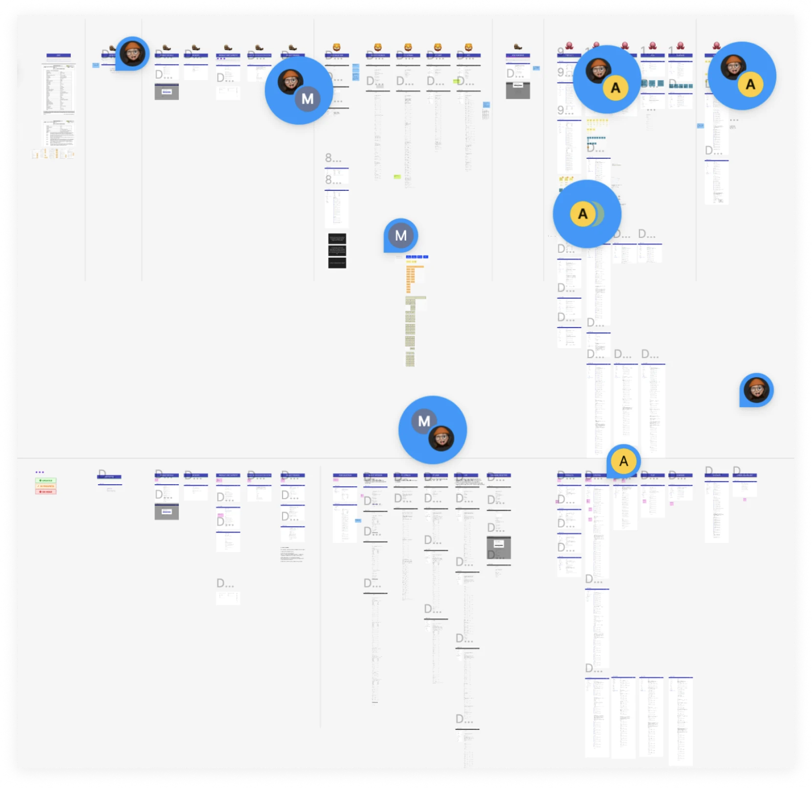
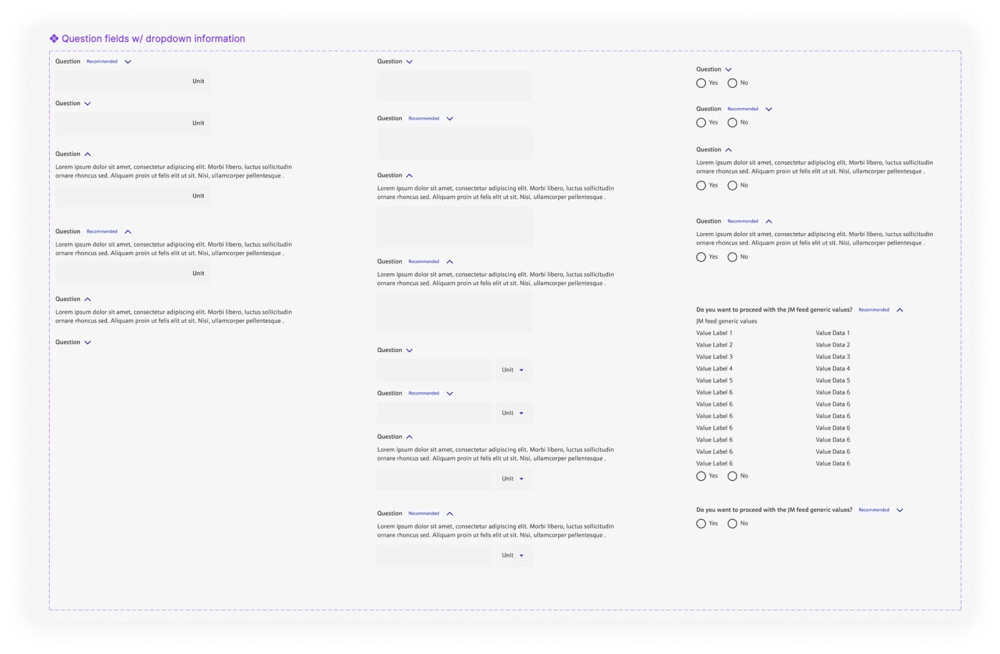
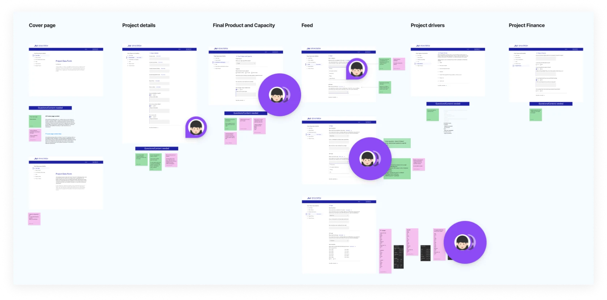
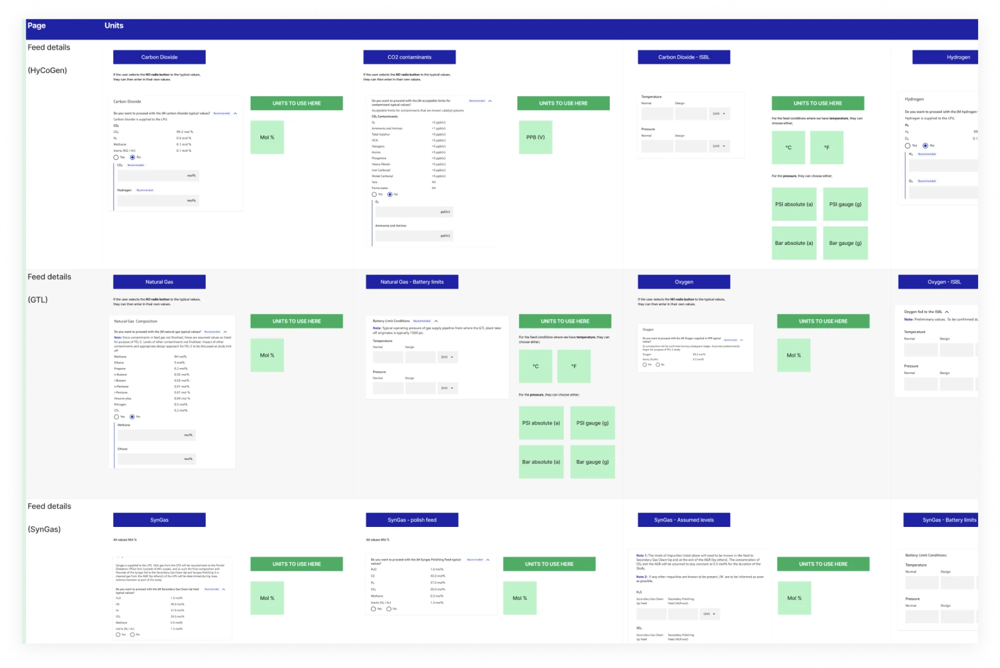
Working as one team
Stakeholder workshops, design critiques, regular design catch-ups and agile ceremonies supported alignment throughout the project. Design hackathons created space for collaborative ideation, while weekly Figbite sessions shared practical design tips and encouraged ongoing skill development.
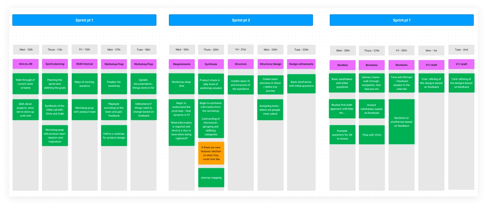
From prototype to implementation
Three usability tests helped evaluate the proposed experience, while collaboration with product and development teams ensured the designs were ready for implementation. Functionality annotations documented the intended behaviour of each screen, providing a clear reference for building the initial interfaces from the Figma prototype.
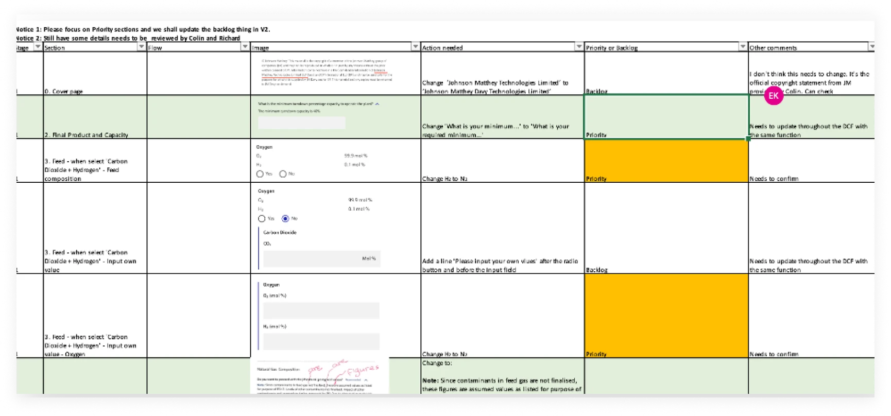
A structured foundation for more efficient data capture
The project established a design direction for a more consistent data capture experience across a complex set of business requirements. Journey mapping, information architecture, prototyping and usability testing connected the underlying process to the interfaces being designed, while functionality annotations supported the transition into development.
Project at a glance
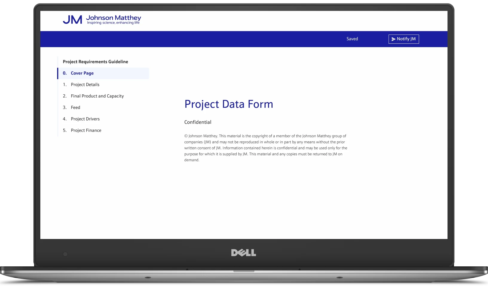
Projected business value
Financial figures were projections associated with the wider initiative, not verified realised outcomes.
Designing beyond the interface
01 / Collaboration is part of the design
Enterprise products depend on alignment between business stakeholders, research, design and delivery. Shared working practices help keep different perspectives connected throughout the process.
02 / Information architecture shapes usability
When a product needs to accommodate extensive data requirements and different workflows, the underlying structure is as important as the interface built on top of it.
03 / Design must connect to implementation
Clear functionality annotations and ongoing collaboration with development help translate design intent into a buildable product, reducing the gap between the prototype and the implemented experience.
04 / Testing creates opportunities to refine
Usability testing is part of an iterative process, helping teams evaluate proposed experiences and identify areas that need further attention.